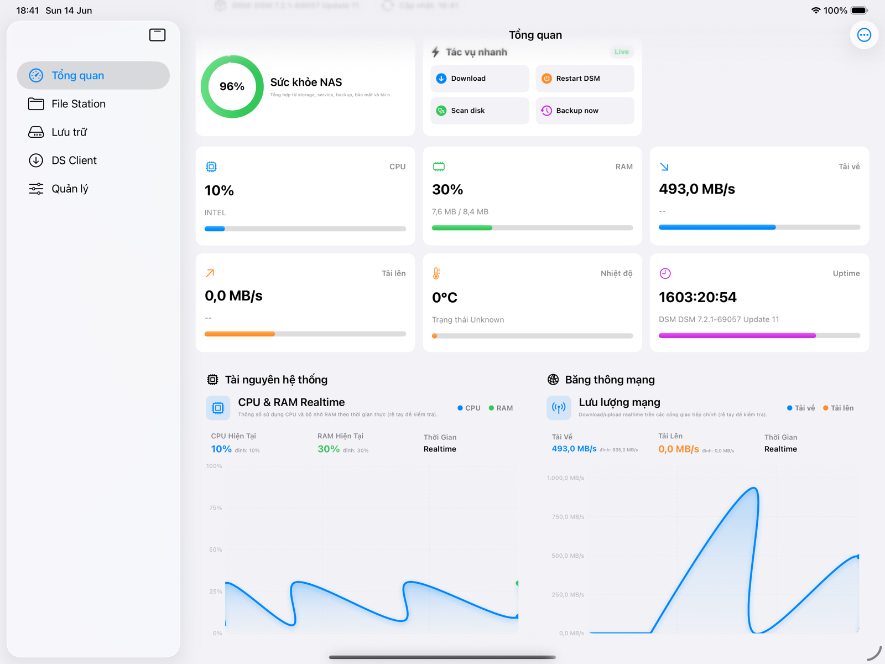
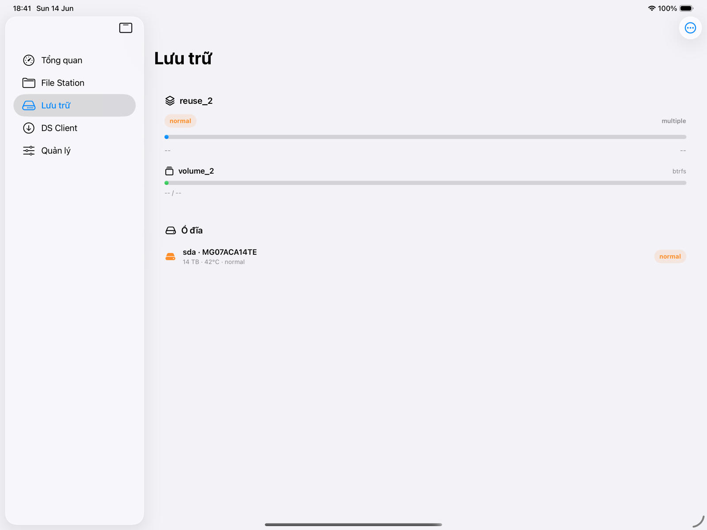
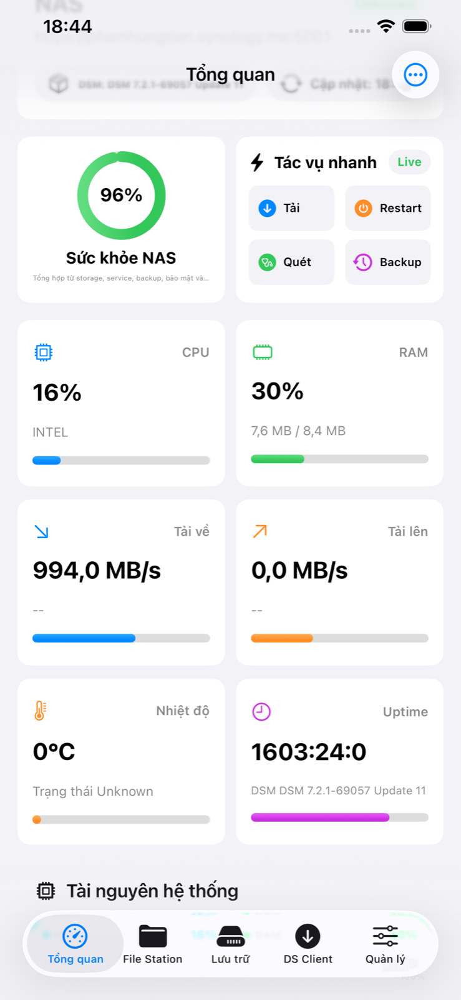
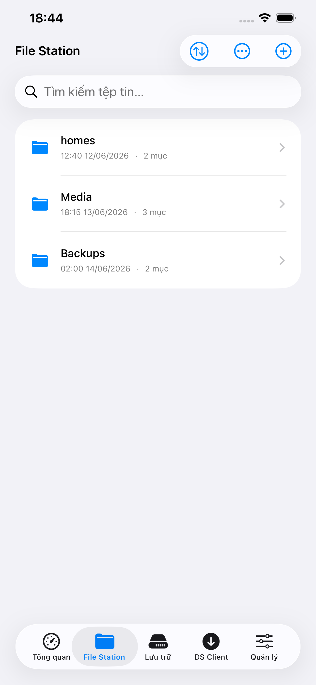
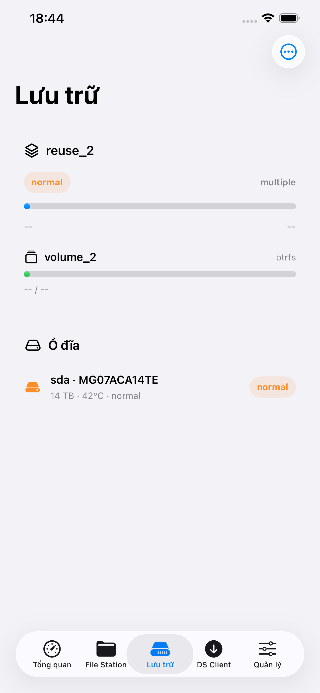
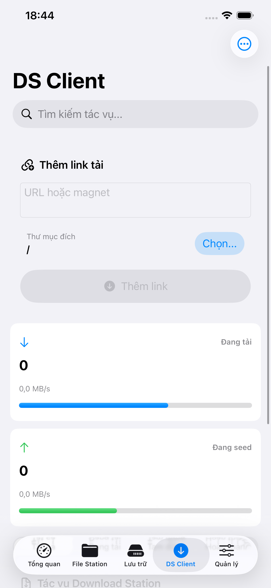
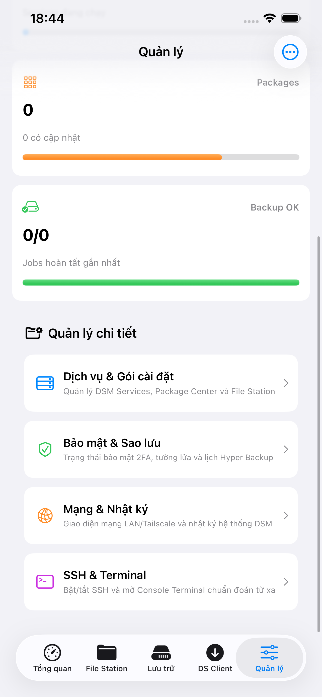
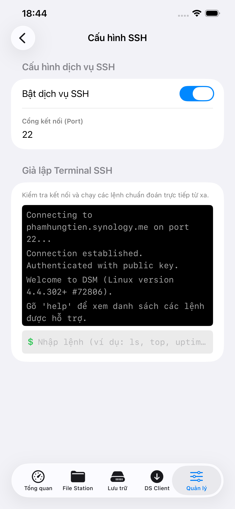

Giám Sát Thời Gian Thực
Theo dõi biểu đồ sử dụng CPU, RAM, lưu lượng mạng truyền tải, cùng nhiệt độ và tình trạng ổ đĩa cứng S.M.A.R.T.

Quản lý NAS của bạn. Mọi lúc, mọi nơi.
Ứng dụng di động chuyên nghiệp giúp giám sát hiệu suất hệ thống Synology DSM, quản lý file, chuyển gói phần mềm và truy cập terminal SSH an toàn.
Sắp có trên App StoreTính năng nổi bật
Theo dõi biểu đồ sử dụng CPU, RAM, lưu lượng mạng truyền tải, cùng nhiệt độ và tình trạng ổ đĩa cứng S.M.A.R.T.
Duyệt thư mục, tải lên/tải xuống tệp tin với tiến trình nền trực quan, tạo link chia sẻ công khai và quản lý file lưu trữ.
Tích hợp dòng lệnh SSH an toàn giúp chạy các lệnh quản trị Linux trên NAS nhanh chóng và trực quan.
Xem danh sách và quản lý trạng thái hoạt động (bật/tắt) các gói ứng dụng DSM như Download Station dễ dàng.
Bảo vệ thông tin đăng nhập tối đa với kết nối HTTPS mã hóa và nhập mã OTP xác thực hai yếu tố (2FA) an toàn.
Trải nghiệm đầy đủ giao diện và tính năng của ứng dụng thông qua dữ liệu mô phỏng trước khi kết nối với thiết bị NAS thật.
Biểu đồ tròn và thanh tiến trình biểu diễn chi tiết CPU, RAM, dung lượng ổ đĩa, nhiệt độ hệ thống rõ ràng và chuyên nghiệp.

Giao diện ứng dụng





